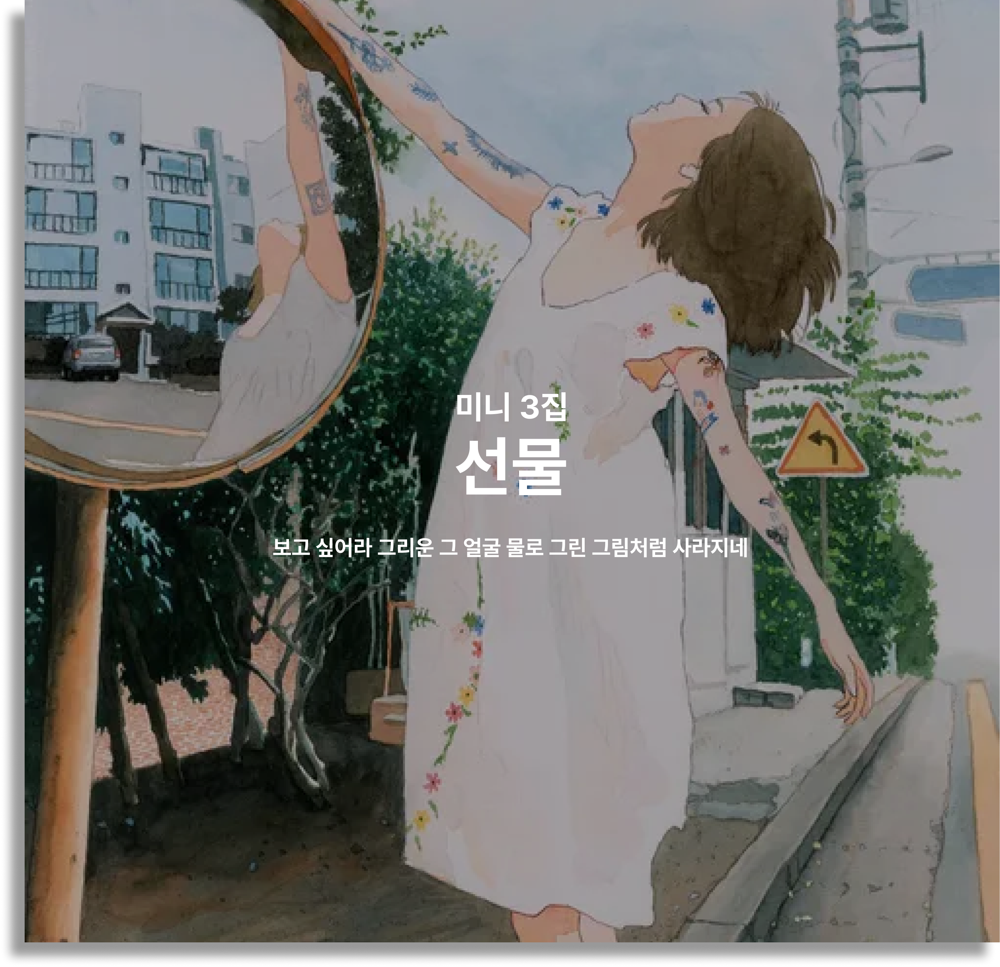
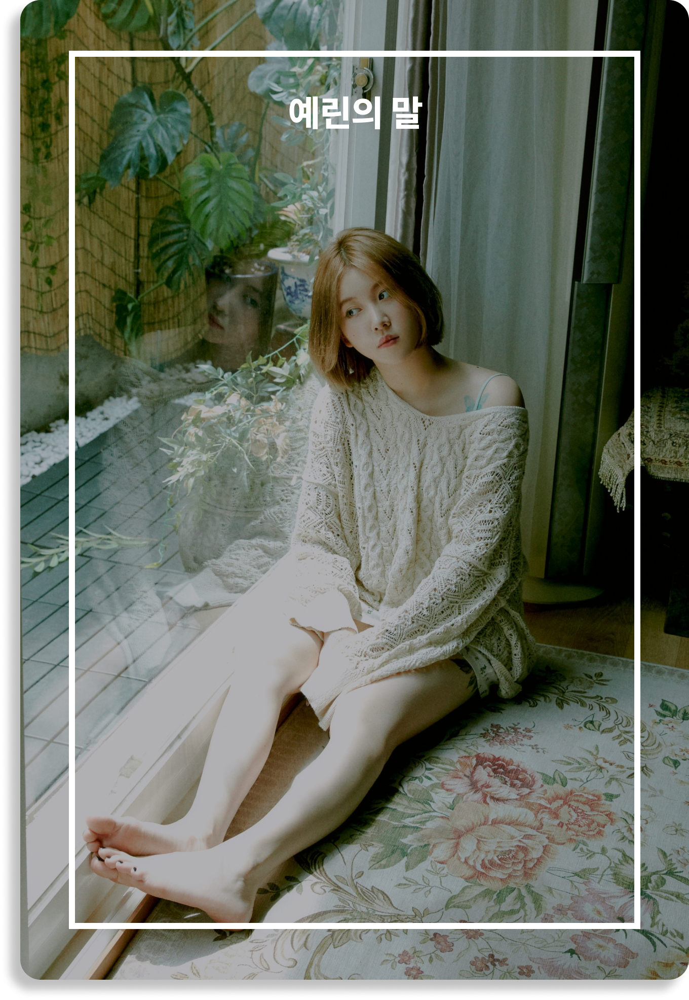
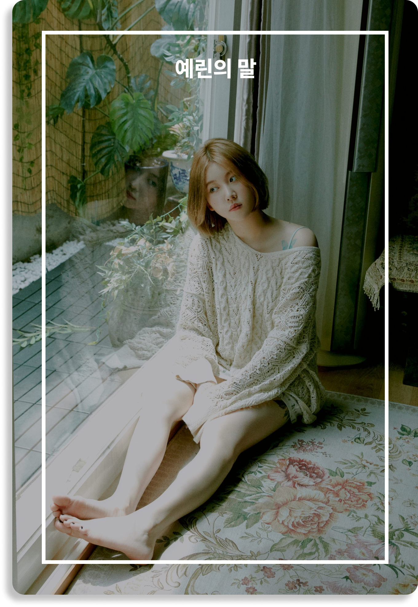

VINYL 선물
이번 앨범은 개인 사운드클라우드 계정에 공개돼 있던 기존 곡을 포함해 한
번도 공개한 적 없는 새로운 커버 4곡을 추가로 담으며, 미발매 커버곡의
정식 발매를 기다려오던 리스너들에게 깜짝 ‘선물’로 찾아올 예정이다.
아티스트 라인업으로는 토이, 검정치마, 넬 등 대중과 마니아 모두에게
사랑받는 6팀의 뮤지션이 이름을 올렸다. 백예린식으로 재해석한 이들의
숨은 명곡을 음반으로 만나볼 수 있다.
선물은 보통 포장지로 감싸거나 그럴듯한 종이백 안에 넣어 주곤 한다.
앨범의 제목 '선물'이라는 단어에 담은 것은 온전히 나의 개인적인 감정일
뿐, 결국 선물을 받는 사람이 포장을 한 겹 한 겹 뜯고 느낄 감정이
무엇일지 나는 알 수 없다. 이 곡들을 다시 부르며 내가 느낀 것들을 담아
포장을 열심히 해보았는데 잘 전달되었으면 좋겠다.
부디 모두 건강하게 다시 만나길 바라요. 반복되는 일상에 조금이나마
위로가 될 수 있길 바라며
사랑을 담아, 예린.
1. 그럴때마다
Original Song 토이 Arranged by 구름 Keyboard 구름
2. Antifreeze
Original Song 검정치마 Arranged by 구름 Elec guitar Jonny Acoustic
guitar Jonny Drum 김치헌 Bass guitar 구름 Keyboard 구름 Chorus 백예린,
구름, Jonny, 김치헌, 아부지, 김형수, 이예든, 임별, Julia Murphy
3. 돌아가자
Original Song 이영훈 Arranged by 구름 Lap steel guitar Jonny
Percussion 한민영 Keyboard 구름 Bass guitar 구름 Chorus 백예린, 구름
4. 왜? 날
Original Song 장기호 Arranged by 구름 Elec guitar Jonny Drum 김치헌
Keyboard 구름 MIDI programming 구름
5. 한계
Original Song 넬 (NELL) Arranged by 구름 Elec guitar Jonny Acoustic
guitar Jonny Lap steel guitar Jonny Drum 김치헌 Keyboard 구름 Strings
구름
6. 산책
Original Song 소히, 이한철 Arranged by 구름 Keyboard 구름